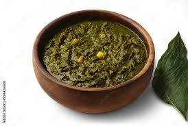

Indian Saag

Description
Indian saag is a curry of cooked mustard or similar bitter greens (kale, collards, turnip greens) and spinach or similar mild greens (chard, bok choy, beet greens). Any combination of greens works! Use more spices and peppers for hot saag or less for mild.
Ingredients
- ½ cup butter
- 2 tablespoons ground turmeric
- 2 teaspoons cumin seed
- 1 green chile pepper, seeded and diced
- 2 cloves garlic, chopped
- 1 pound chopped fresh mustard greens
- 1 pound chopped fresh spinach
- 1 teaspoon ground cumin
- 1 teaspoon ground coriander
- 1 teaspoon salt
Steps
- Melt butter in a large skillet or wok over medium-high heat; cook and stir turmeric, cumin seed, chile pepper, and garlic until fragrant, about 2 minutes.
- Stir in chopped mustard greens and spinach a little at a time, adding the tougher stems and thicker leaves first. Cook and stir until greens are thoroughly wilted
- Stir in ground cumin, coriander, and salt. Cover, reduce heat, and simmer until greens are tender, about 10 minutes; add water as needed to keep greens moist.